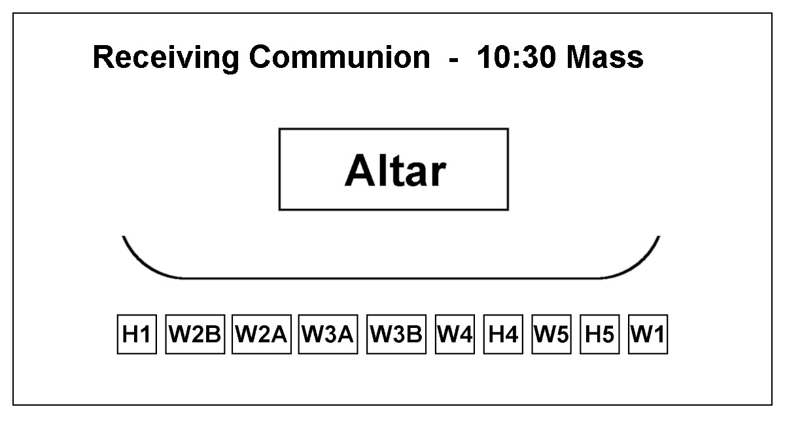
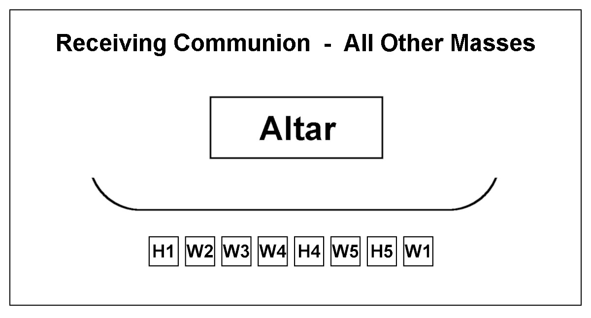
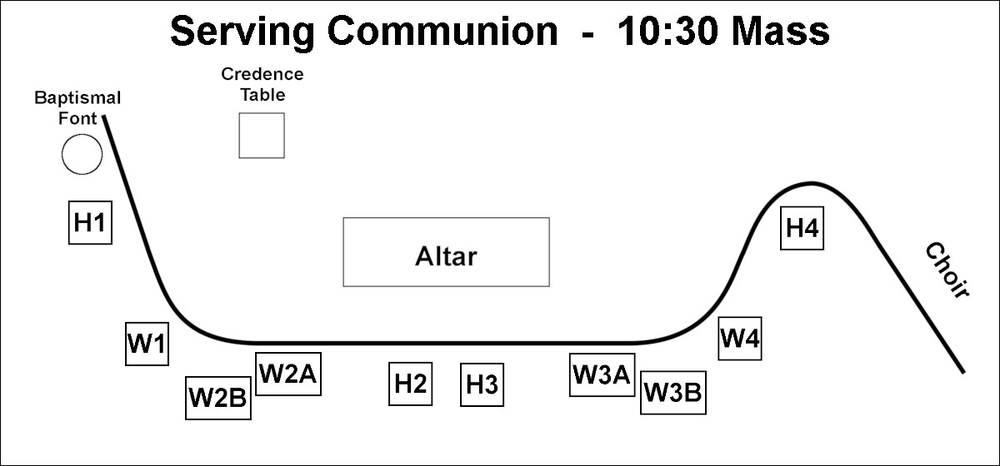
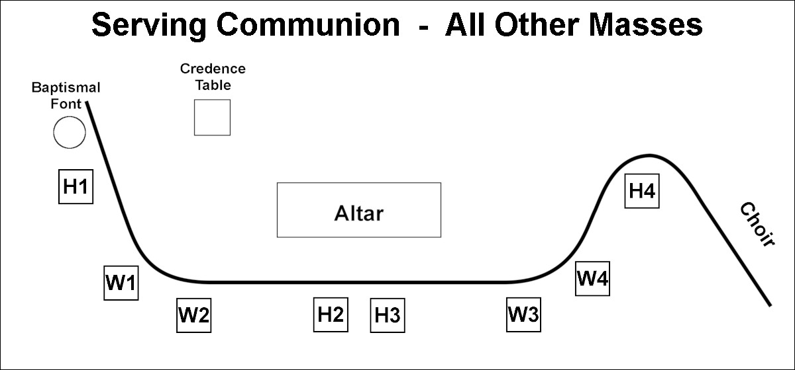

Prince of Peace EMoHC Guidelines
Introduction
The Prince of Peace Community welcomes and thanks you for answering the call to serve as Extraordinary Ministers of Holy Communion (EMoHC).
As Catholics, we truly believe in the Real Presence of Jesus Christ in the consecrated Host and Wine.
Our body language, prayerful attitude and reverent treatment of the Sacred Vessels, the Body of Christ, and His Precious Blood helps to support the overall sense of reverence at Holy Communion.
When people see us genuflect before the Tabernacle and bow before we receive Holy Communion, they are reminded of the correct behaviors and proper reverence.
Yes, Jesus is truly present in the Tabernacle. Yes, we will be holding and giving the Body, Soul and Divinity of Jesus and yes, we will be serving the real Precious Blood of our Lord Jesus Christ.
As EMoHC we must be ever mindful of who we are about to receive and who we are about to touch. We pray that God will fill us with a devout and reverent spirit as we offer The Body and Blood of Jesus Christ to others.
Our leadership in prayer, reverence, adoration and service in the parish reminds people of the Real Presence of Jesus.
“ Then I heard the voice of the Lord, saying, “Whom shall I send, and who will go for Us?” Then I said, “Here am I. Send me!” Isaiah 6:8
General Information
The boundaries of the Prince of Peace service area are determined by the Archdiocese of San Antonio.
For your safety we suggest footwear that will accommodate the usage of steps.
Procedures for Mass
Seating In Mass
EMoHC are seated in the assembly until the time they approach the Altar to assist in the distribution of Holy Communion. EMoHC should sit in a pew with access to the middle aisle so they may easily approach the Altar without drawing attention.
Approaching the Altar
During the Communion Rite, the P riest holds up the host and says "Behold the Lamb of God, behold him who takes away the sins of the world. Blessed are those called to the supper of the Lamb."
The congregation responds with the prayer "Lord, I am not worthy that you should enter under my roof, but only say the word and my soul shall be healed."
As soon as that prayer is completed, Eucharistic Ministers should walk to the front, bow before the Altar, and proceed to stand in a line along the front of the Altar to receive communion. It is important that you line up according to your Mass and the position you are serving as shown in the diagrams below. Approach the Altar silently and reverently .


H = Host, W = Wine, H5 = Traveling Host, W5 = Traveling Wine
After Communion, each EMoHC will receive a Ciborium or a Chalice from the hands of a P riest or D eacon. You do not come up to the Altar and take the sacred vessels yourself.
The first person to receive the Body of Christ from the Priest is W1. The Priest will then continue down the rest of the line serving the Body of Christ, moving from right to left.
After W1 consumes the Body of Christ, Deacon will serve W1 the Precious Blood. W1 will then keep the Chalice and follow the Priest down the line serving the Precious Blood to the rest of the Eucharistic Ministers.
Meanwhile, a Deacon or the Priest will hand each Eucharistic Minister a Ciborium or a Chalice when they finish Holy Communion, after which they can move to their assigned position and begin serving.
Serving Positions


The serving positions around the sanctuary are marked with small pieces of blue tape on the floor.
Giving the Sacred Body of Christ
As each communicant approaches, the EMoHC presents the consecrated Host and says, “The Body of Christ.” After the communicant responds with “Amen,” the Eucharistic Minister places the Host on the communicant’s tongue or in the communicant’s hand. No other words should be added. The decision to receive the host on the tongue or in the hand is made by the communicant, not the Eucharistic Minister . Special care should be taken to ensure that the Host is consumed by the communicant in the presence of the Eucharistic Minister , so that no one walks away without consuming the Host.
Giving the Precious Blood of Christ
As each communicant approaches, the EMoHC presents the Chalice and says, “The Blood of Christ.” After the communicant responds with “Amen,” the Eucharistic Minister hands the Chalice to the communicant. After each communicant has consumed the Precious Blood, the Eucharistic Minister wipes the rim of the Chalice with the Purificator.
The Traveling Ciborium and Chalice (H5 and W5)
The procedures for The Traveling Ciborium and Chalice are not the same at all masses. Please ask your Mass Coordinator for specific instructions.
After Administering the Body of Christ (H1 - H5)
After Communion, Ciboriums are returned to the left side of the Altar.
After Administering the Precious Blood of Christ (W1 - W5)
After Communion, Chalices are returned to the Credence Table.
SITUATIONS
Communicants Unable to Receive Holy Communion
The faithful who are unable to receive Holy Communion will sometimes approach the EMoHC with their arms crossed over their chest indicating their desire to receive a blessing.
EMoHC are not to extend their hand to offer a blessing and should not physically touch the person . Instead, you should say the following words, without a gesture: “Receive our Lord Jesus Christ into your heart.”
When You Run Out of Consecrated Hosts or Precious Blood
If you run out of consecrated Hosts while people are still in line, ask them to wait. Go to the Priest or Deacon and ask for more Hosts. Then return to your position and resume serving.
If you run out of Precious Blood while people are still in line, stop serving and return your Chalice to the Credence Table.
If the Body of Christ Is Dropped
If a Consecrated Host accidentally falls to the floor, use your Purificator to pick the Host up. At that point you have two options:
If the Precious Blood of Christ Is Spilled
If the Precious Blood is spilled, immediately cover the spill with your Purificator. Ask an usher to stand by the spill to make sure that no one steps on the Purificator. Go back to the Credence Table and get another Purificator. If there is no extra Purificator there, ask the Altar Server to get one for you. Then return to your position and resume serving the Precious Blood. When you are done serving, return your Chalice to the Credence Table and inform the Priest or Deacon of the incident. They will make sure that the Precious Blood of Christ is properly cleaned.
For more information from the Archdiocese, please click the following link:
6-16-23 Guidelines for EMHC EN
Remember , please return EMoHC Lanyards before leaving the Church.
Prince of Peace EMoHC Procedures v1.0 / 2023-12-10